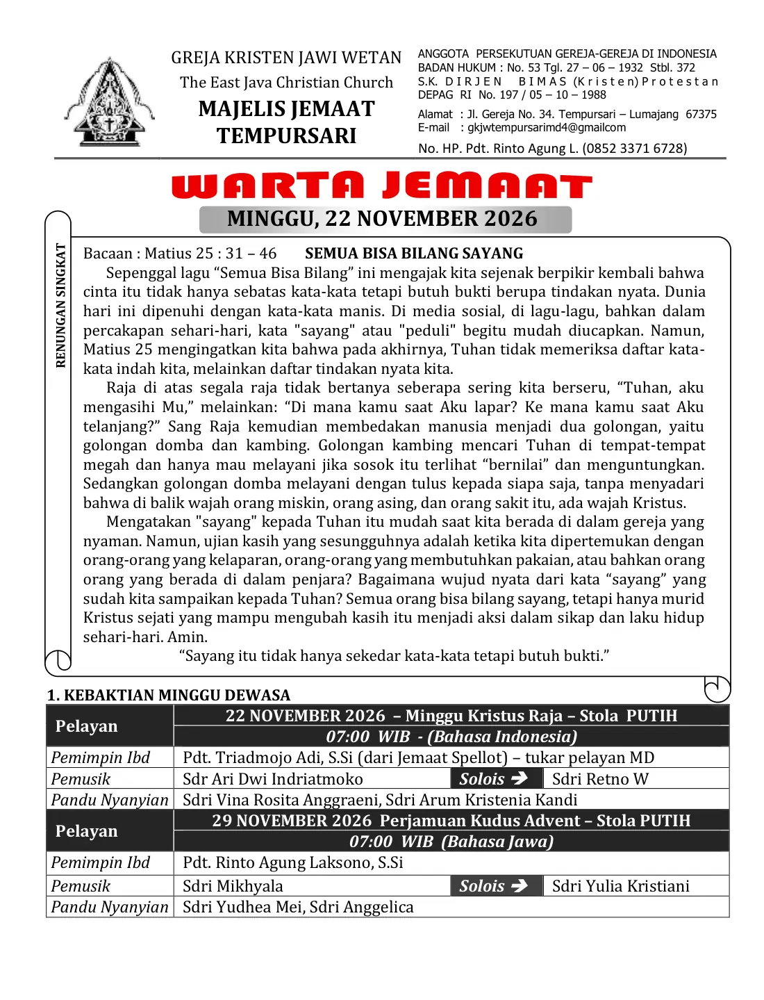

Arsip
5 terbitan tersimpan
November 2026

Juli 2026
Tidak ada terbitan untuk pilihan ini. Ganti tahun atau jenisnya.
 Multimedia GKJW Tempursari
Multimedia GKJW Tempursari
Warta minggu ini
Minggu, 22 November 2026
Minggu Kristus Raja · stola putih
“Semua Bisa Bilang Sayang” — Matius 25:31 – 46
Buka warta
5 terbitan tersimpan
Tidak ada terbitan untuk pilihan ini. Ganti tahun atau jenisnya.